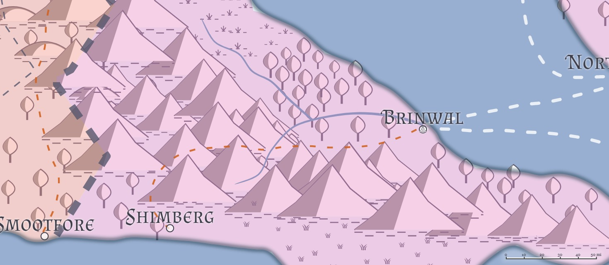

Brinwal (Liria)
Population: 8,500 -- 50% human, 35% Firstborn, 15% Created
Features: Port, Walled, Marketplace, Shantytown
Geography

Brinwal is a small city on the western coast of the Ravensound, just south of Stagrorest. A major trade road, the Dawn Way, connects Brinwal to Shimberg, and Brinwal has a major port that handles shipping all up and down the Ravensound. Numerous towns and villages dot the lands around Brinwal, particularly along the Dawn Way. The Wyrmsmoke mountains, the name for the local cluster of the Daws mountain range, lie to the west and southwest of Brinwal, forming a barrier between it and Lions Plains.
The Elsir River runs from the Ravensound west, into the Wyrmsmoke mountains, with numerous smaller tributaries feeding many of the villages and towns around the area.
To the west lies the Witchwood, a dark untamed forest that lies across the Dawn Way near the crossing of the Elsir River and on up into the Wyrmsmokes. It is a major source of lumber, but harvesting is scarce due to the wildness of the forest and its inhabitants.
North of the Witchwood lies the Blackfens, a marsh that runs from the coast to the east to the Wyrmsmokes to the west, and from the Witchwood to the south almost all the way to Stagrorest to the north. Lake Rhest feeds the Rhestwash into the Elsir River, and is the site of the ruins of Rhest, once the capital of the province. Rhest itself has been overtaken by the lake, and lies partially submerged within the waters.
Brinwal has a healthy shipping lane that goes back and forth between itself and Stagraven, Northraven, Crystargar, and many ships from further beyond. It generally doesn't ship to Stagrorest or Shimberg, since land routes are generally cheaper, though this has become less common as merchants report some unusual activity in the Wyrmsmoke mountains and hills.
Authority Figures
- Lord of Brinwal: Kerden Jarmaath
- Captain of the Lion Guard: Lars Ulverth
- Lady Verrasa Kaal
- Immerstal "the Red" Paedralian
- Rillor Paln
- Eldremma Axenhaft
- Tredora Goldenbow
Military Units
The Lion Guard The army of Brinwal, acting as City Watch and garrison. Composition: 40xFighter (Cavalier) 3, 50xFighter (Cavalier) 2, 110xFighter 1. Leaders ("the Lions of Brinwal"): Captain Lars Ulverth, four Fighter (Cavalier) 4, 12xFighter (Cavalier) 3. (Total: ~200)
House Kaal Guard Bodyguards and guards sworn to House Kaal. Composition: two Rogue 4, three Rogue 3, four Rogue 2, six Rogue 1, eleven Fighter 3, sixteen Fighter 2, twenty-two Fighter 1. Leaders ("House Kaal Elite Guards"): Fighter 6, four Fighter 4. (Total: ~65)
Militia Mustered on demand. 50xFighter 3, 180xFighter 2, 750xFighter 1. (Total: ~1000)
Draconic Order
The Draconic Order maintains no chapterhouse here, but a Talon (squad) of Knights of the Copper are here: Arbur Suncloud, 4xFighter 1, Paladin 2, Cleric (Life) 2. They reside in the Lion Guard barracks in exchange for conducting the odd investigation on behalf of the Guard.
Dueling Schools
There are no dueling schools in Brinwal.
Bardic Colleges
Bards are highly welcome in Brinwal, and frequently pass through on their way west, south, or east.
Brinwal Academy
Brinwal has a school for higher learning, the Brinwal Academy (very roughly patterned on the Great Library of the Brass), and teaches history, magical theory, geography, culture, and most of all, the entertainment arts.
The Brinwal Academy routinely puts on shows for the populace at Velorian's (a playhouse), and at least one Bard 1 graduates the Academy every year, and many return to take up study of the Bardic College of Lore before departing again. A few study the College of Satire.
Great Houses
House Jarmaath
Lord Kerden Jarmaath is a solid figure of the House Jarmaath in Brinwal, and rules both his city and his House with a firm but fair hand. He has numerous siblings that he has seen placed in positions of authority throughout the peninsula, but currently lacks a wife or heir, which makes plenty of people nervous, thinking that Brinwal is one assassin's knife away from rulership by House Kaal.
House Kaal
Lady Verrasa Kaal is struggling to rekindle the reputation of her House, even as she secretly consorts with the various sorts of people that has brought her House low in recent decades. Verrasa Kaal has chosen to take a quieter approach than her siblings in other cities, however, and seeks to leverage the mercantile power of her House's merchant guild to make loans and forgive debts as necessary to call in favors. She will not openly oppose House Jarmaath, even as she secretly undermines them for her own House's benefit, but in truth she has no desire for the Baronial Seat, since that would make it harder for her to keep her relationship with Rillor Paln. She would rather keep Jarmaath on the throne and work from the shadows.
House Teskerwill
House Teskerwill in Brinwal is headed by the widower Owen Teskerwill. Continuing the long tradition of Teskerwill horsebreeding, Owen has built a sizable holding here, and looks forward to handing it over to his three adult children (Kharra, Hurndahl, and Danella) to carry on after his passing.
House Haskinar
House Haskinar is a recent addition to the Game of Houses, with Rhola Haskinar having received a patent of royalty from Kedren Jarmaath a decade ago. Haskinar has leveraged that to gain deep economic commitments from the farmers around Brinwal, and now Haskinar either owns, finances, or has alliances with virtually all of the farmers that surround the city.
Haskinar is in a bitter feud of words with House Kaal; specifically, Rhola Haskinar cannot stand Verrasa Kaal (and vice versa), and the war of words between the two frequently spills out into the streets.
Mage Schools
Red Magic College
A small (~12) Five Elements school is here, headed by Immerstal "the Red" Paedralian. The school's "tower" is a two-story building, in which the basement serves as Immerstal's workshop, the first floor as a magic shop, and the second floor as private residential space for Immerstal and his partner Alandri. The shop routinely sells common magic items, and the prices are non-negotiable. Many items of uncommon rarity can be commissioned, with half the price up front as a deposit.
Immerstal's partner Alandri runs the shop. She refuses to negotiate prices, and will either refuse service or escort out of the shop entirely those who do not understand that concept. She is much closer to the students than Immerstal is, and some few students have a not-so-secret crush on her. Why she chooses to partner with Immerstal is, to all onlookers, a complete mystery, and subject of much speculation.
Mercenary Companies
No mercenary companies are currently under contract to Brinwal, but the Shining Axe Company quarters in the nearby town of Hammerfist Holds (to the west, along the Dawn Way) when they are not under contract, and have a long history of working for Brinwal. In the past, mercs were more common when tensions were higher (both from their southern and western neighbors), but Brinwal has seen (relative) peace in the last hundred years, and as such the mercs have generally looked for better employment elsewhere.
Religions
Kaevarian Church
The Church maintains a small diocese (~250 attendants) here, and has some ties to the community. The current Bishop of the diocese is relatively new, Bishop Laeran Purrosal (Half-elf female Cleric 2), and has just begun to settle in to leading the locals in worship.
The Church has a staff of 3 clerics (all Cleric 1) to aid the Bishop, and they sell some common divine magic items, including potions of healing.
Pantheon
The dominant worship center of Brinwal is the Cathedral of Pelor, headed by Tredora Goldenbrow. She has a few clerics that aid her in her duties, and her temple has the largest (~1000) number of celebrants here.
The Pantheon has several smaller (roughly a hundred or so worshippers each) temples/cells here of various dieties, to Brigantia, Ehlonna, Gond, and Larethian.
Additionally, a high priestess of Wee Jas, High Mourner Mhiram Tarethian built a gradiose and soaring temple over the Brinwal Graveyard. It is not clear from where the funds came from for that building, but the populace bears the priests no ill will; for as long as Brinwal has stood, the clerics of Wee Jas have been faithfully performing funerals and burial rites for free for those who cannot afford them, and Brinwal has remained remarkably free of undead for as far back as anyone can remember. The High Mourner has two more assistants (Cleric (Death) of Wee Jas 3) to assist her, and currently has about a hundred worshippers. She and Tredora Goldenbrow constantly seek to draw off worshippers from each others' congregations, but the rivalry is mostly good-natured, and the two frequently meet along with the Bishop of Kaevar to discuss matters both local and divine.
Rogues' Guilds
Black Knives
The local Black Knives cell (of about fifty or so members) is headed by Rillor Paln, though many within the guild are grumbling quietly about his leadership; he seems more eager to support the goals of House Kaal than the guild itself.
City Layout
-
City Gates: Brinwal's gates serve a dual purpose. They control foot traffic into the city and they serve as garrisons for many of the city's guards. A city gate can house two dozen guards comfortably, and four dozen in times of need. Visitors to the city can enter without paying taxes, but merchants and obvious adventuring parties must pay a gate tax of 1 sp per person to enter the city
-
The Stone Wyvern: The Stone Wyvern gets its name from the petrified wyvern that dominates the inn's common room. This looming statue takes up half of the room and is mounted on a large upthrust rock that protrudes through the building's floor from the ground below. The wyvern was petrified more than a milennia ago by a group of adventurers who were defending local farmers. An enterprising gnome named Yabaling bought the plot and built a building around the wyvern, figuring the statue would make an excellent conversation piece. He was right--today, the Stone Wyvern is one of Brinwal's most successful inns. Yabaling's descendant, Trabalard Yab, runs the inn now. He has developed a healthy fear that some troublemaker might come along and unpetrify the wyvern, but he also worries that getting rid of the statue will hurt his business. As a result, he spends much of his time worrying.
-
Axenhaft Security: This large building is owned by a dwarf named Eldremma Axenhaft. She keeps a small contingent of fighters and warriors on staff, hiring them out as guards for merchants. (Currenly she has three Fighter 2 and five Fighter 1 on hand.) She also serves as a point of contact between various adventurers and keeps tabs on who's in town and looking for a job, as well as who's offering jobs. Adventurers seeking work could do far worse than to consult Eldremma. Eldremma is also the point of contact for the Shining Axe Company in Brinwal.
-
Shank's Shivs: The proprietor of this weapon shop, Kedren Shank, is an ex-bandit who served a ten-year sentence in the dungeons below Brinwal Keep, then spent the next twenty years establishing himself as a respectable businessman. Today, Shank's Shivs is widely regarded as the best place to get weapons in all of Brinwal. Shank employs a half-dozen artisan smiths and holds a standing contract to provide the Lions of Brinwal with the weapons they need. He is quite aware of Rillor Paln's Nightmaster status, and has already decided to try and take him and the Black Knives down if the chance presents itself.
-
Brinwal Market: This large open-air market is where traveling merchants, performance troupes, con artists, streetcorner prophets, local farmers, and the like come to sell their services and wares. The market is normally quite busy, making travel through the area a vexing prospect; during times of stress or trouble, the market is evacuated and during wartime, used for training recruits.
-
The Thirsty Zombie: The sign above this tavern's entrance depicts a wall-eyed zombie drinking from a cracked tankard. The ale in the tankard pours out of various holes in his neck and torso to pool at his feet, where six drunken rats cavort. The sign is a fair warning that this watering hole isn't for the cultured and quiet--which a glance at the tavern's patrons will confirm. The Thirsty Zombie's clientele is universally coarse, foul-mouthed, and loud, none more so than Torgin Kuraki, the corpulent half-orc who runs the place. He doesn't keep (or need) bouncers, preferring to handle any customerthrashing himself--often to the delighted whoops of his other patrons. The taste of Torgin's whip is usually enough to curb a drunkard's unwelcome revelry. When additional persuasive is called for, Torgin keeps a supply of a dozen +1 merciful bolts for the masterwork heavy crossbow (named "Last Call") that hangs openly (and meaningfully) behind the bar, always pre-loaded and ready for use.
-
Red Magic and Sundries: This tall, thin, multistory building, one of the few completely stone structures in Brinwal, is the shop and home of Immerstal the Red, Brinwal's most prominent wizard. Immerstal lives with his longtime companion, (a polymorphed gynosphinx) named Alandri, in a well-apportioned apartment on the upper floor. The second floor is set aside for his research, while the ground floor is a cluttered but wellstocked magic shop. Alandri runs the shop while Immerstal busies himself in his library/workshop; she is fully capable of defending the place from thieves or scoundrels. Prices here are fair, and Alandri detests haggling--anyone who tries to haggle with her prices is shown the door. (Like all gynosphinxes, she enjoys clever wordplay, and those who amuse her with riddlecraft receive preferential treatment.)
-
Shrine of Yondalla: This modest building, a refurbished guildhouse from Rhestan days, is now a religious center catering to the local halfling population. Since the clergy of the shrine spend much of their time aiding Brinwal's indigents and poor, the human citizens of town view the place as a welcome addition. The benevolent presence of these kindly halflings, led by a soft-spoken cleric named Natalie Nettlemead, has done much to remove the stereotype of the sneaky halfling scoundrel from the mind of Brinwal's populace. PCs who seek healing from this shrine are expected to pay what they can afford, but no non-evil supplicant is turned away.
-
The Craven Raven: The proprietor of this high-class tavern prides himself on providing a clean, sophisticated venue for Brinwal's populace to seek entertainment and drink. A slim, elegant male human, Andraki Lenn won the deed to this once-notorious tavern from a scoundrel of a gnome named Fishlip Fergus in a game of three-dragon ante. The townsfolk of Brinwal were pleased to see Fergus go, and Andraki kept the tavern's name (and the attendant sign that depicts a scruffy raven clutching a gold coin in its talons) the same but upgraded everything else. Today the tavern is a favorite among the nobility of Brinwal, and after performances at Velorian's (see area 10) the taproom is always crowded. Adventurers aren't welcome here unless they are cultured, dress well, and keep their language clean. As a result, most adventurers seek out other places to drink, such as the Thirsty Zombie (area 6) or the Laughing Manticore (area 12).
-
Velorian's: This large building is Brinwal's playhouse, although plays aren't the only entertainments offered here. Concerts, dances, magic demonstrations, and scholastic debates are often hosted here as well. The owner is a beautiful female half-elf named Veloria Mandragoran, a retired adventurer who saw an opportunity to make money in the comfort of the city when she learned that Brinwal didn't have a proper playhouse. It is difficult to meet Velorian; she is often mixing with the nobility of the city, and her troupe's players are often out-and-about performing various deeds on her behalf. (It is rumored that her troupe often acts as spies on behalf of the city's leadership, but this has never been confirmed in any meaningful way.)
-
Brinwal Academy: This two-story building is perhaps the most prestigious place of learning in the entire Elsir Vale. Founded and financed by a huge grant given by a revered wizard named Lessiter Kayne (now deceased), the academy offers courses in history, magical theory, geography, alchemy, engineering, and culture. The academy has on-site accommodations for faculty, while students live in one of three nearby dormitories. Most of the courses are for adults, but half of the ground floor is dedicated to a finishing school known throughout the vale for producing cultured and well-mannered aristocrats. The headmaster of the academy is a no-nonsense matron named Damynda Rianthiar.
-
The Laughing Manticore: This building is a combination tavern and brewery. The taproom caters to rich but wild patrons, making it a place where most adventurers feel right at home. The Laughing Manticore's most well-known product is its manticore mead, a pale red drink of honey and spices served in a hollowed-out manticore tail spike that allows the cup to be stabbed into wood with a satisfying chonk! once the drink is done. The owner of the Laughing Manticore is a dapper male human named Rillor Paln. The brewery and tavern is in fact a cover business. Everyone in town knows (or at least suspects) that Rillor is guildmaster of Brinwal's Black Knives (the local thieves guild). Since his minions generally stay their hand against targets inside the city walls, and since those who openly criticize him tend to experience sudden misfortune, and since he enjoys the support of House Kaal, no one has yet confronted Rillor. Besides, he makes such a tasty drink.
-
Kaal Manor: This richly furnished mansion commands an impressive view of the vale to the east of Brinwal. With its own stables, garden, and archery range, Kaal Manor might well be the greatest and most tasteful display of wealth in the city. And with good cause: Its primary inhabitant is Lady Verrasa Kaal, a shrewd and gifted merchant who owns more businesses and holds more outstanding markers than anyone else in Brinwal (or, indeed, the vale). It seems that everyone in the city owes the Kaal family something, and for the most part Verrasa is content to let those debts hang over their heads. Being rich and powerful is easier if more people feel grateful that you haven't yet collected on their loans. It doesn't hurt Lady Kaal's ability to get what she wants that she has been Rillor Paln's not-so-secret lover for the past several years. The two are sometimes dubbed "the Velvet Hand," and wags enjoy debating which is the more manipulative and subtle of the two.
-
Teskerwill Manor: One of the founding families of Brinwal dating back to Rhestan days, the Teskerwills of House Teskerwill live in this sizable mansion. Their primary interest is horse breeding, and a sizable walled field to the southwest of this mansion houses the best of their stock. Owen Teskerwill, the widower family patriarch, raises horses for both military and domestic use, and is often the first choice of cavalry officers when looking for a new mount. He is loyal to Lord Jarmaath, and looks forward to retirement and turning the family estate over to one of his three grown children (Kharra, Hurndahl and Danella) at some point.
-
Discreet Departures: This two-story wooden building looms over the surrounding structures. Once a shrine dedicated to Wee Jas, the building fell to the care of a cadaverous coffin maker named Worren Lasterman when the church completed construction of a larger temple to the south. Today, Discreet Departures handles the majority of the coffin building for Brinwal's dead.
-
Cathedral Square: This large open square is used for public ceremonies and festivals. It's also where the governing bodies announce edicts and proclamations and hold the occasional hangings.
-
Cathedral of Pelor: The most distinctive building in Brinwal is the Cathedral of Pelor. A massive structure with towers rising well over 100 feet in height, supported by flying buttresses and intricately carved pillars, the cathedral is an impressive display of the religion's dominance over the city. The angle of the church is such that as the sun rises, its rays shine through a massive stained glass window in the cathedral's eastern face and out through a matching window to the west, to wash Cathedral Square with a riot of early morning color. The cathedral has a host of nearly two dozen clerics, led by Shining Servant Tredora Goldenbrow, Brinwal's most powerful cleric.
-
Brinwal Keep: The city's second most recognizable landmark is the squat, four-towered keep perched atop the central hill. Although this place has traditionally been the home of the city's ruler, for many years the ruling lord instead dwelt in one of the newer, more luxurious mansions lower down on the hill, letting the old keep serve only as a garrison, town hall, and prison. With the start of Lord Jarmaath's rule, the old tradition has been restored; Jarmaath and his servants now dwell in the keep. The old-timers of Brinwal welcomed this return to tradition with open arms, and the younger residents are just happy that someone relatively young is in charge of the city for a change. Lord Jarmaath is one of the best, and best loved, leaders Brinwal has had in recent memory.
-
Haskinar Mansion: The Haskinars are Brinwal's least pretentious noble family, and a recent addition to the Great Houses of Liria. The populous Haskinar clan's claim to fame is near-domination of the farming trade around Brinwal, Stagrorest, and Shimberg; family matriarch Rhola Haskinar either owns, finances, or has alliances with virtually all the farmers that surround the city. A long-standing feud between the Kaals ("Elitist plotters!") and the Haskinars ("Mud-fingered dirt-eaters") shows no sign of diminishing any time soon.
-
Brinwal Cemetery: This large compound is surrounded by a low stone wall. As Brinwal has grown, the clergy of Wee Jas have had to move many of the bones buried here into an extensive ossuary below their temple. Several vaults near the cemetery's center are traditionally reserved for the city's nobility. The clerics of Wee Jas are quite accomplished at keeping the periodic infestations of ghouls here under control, and as a result the cemetery is relatively free of undead.
-
Temple of Wee Jas: This modest-sized structure is breathtaking to behold--the clerics of Wee Jas spared no expense in the construction of this new temple, as befits their goddess's vanity. No one in town is quite sure where the temple's high priestess, High Mourner Mhiram Tarethian, got the building funds, and much speculation has arisen over their source. Despite the gossip, Wee Jas's clergy are seen as performing a valuable public service; in the century since they built their first shrine here, they have never done ill by the people of Brinwal, and their efforts to keep the presence of undead from within the city's walls cannot be denied. A friendly rivalry exists between this temple and the faithful of Pelor, and the two churches are constantly trying to win converts from the other rather than seeking new converts from outside their respective religions.